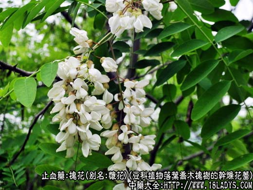
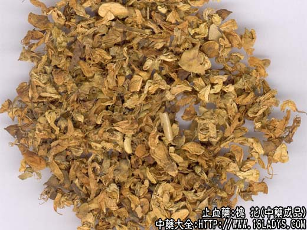
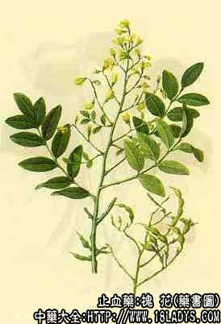

本品为较常用中药。始载《神农本草经》，原名槐，大多用其果实、花及花苗。槐花之名，始见《嘉佑本草》。
别名：怀花、槐花米。
来源：为豆科植物落叶乔木槐树的干燥花蕾（槐米），或已开放的花（槐花）。多为栽培。
产地：全国大部分地区均有生产。以华北地区为多。
性状鉴别：槐米呈卵圆形或长圆形的米粒状，长5毫米左右，直径2毫米左右，新商品黄绿色，陈存则变为绿褐色。花萼钟状，先端五裂，花冠包于花萼之中，或稍吐露 于花萼之外。已开放的花，花瓣多散落，完整的花朵花瓣5片，黄白色，很薄，其中两瓣较大，近圆形，顶端微凹，向外反卷，其余瓣片长圆形，以花萼绿而厚，无枝梗者为佳。
主要成分：含槐花米甲素，槐花米乙素，槐花米丙素，另含鞣质，微量芸香甙及维生素A类物质。
功效与作用：凉血，清热，止血，其原理为：
1、止血。动物实验证实能使出血时间缩短，炒炭后作用更显著。槐米炭中鞣质的含量为生槐花的4倍。
2、降压。槐花液对麻醉狗有显著降血压作用。
炮制：生用，炒用或炒炭，槐米生用。
性味：苦，微寒。
归经：入肝，大肠经。
功能：凉血止血，清肝明目。
主治：常用于高血压头晕，痔疮及肠风便血，血痢等出血症。
临床应用：主要治疗热证出血，尤其便血，如属痔疮出血，多由于大肠有热而致大便燥结，排便时粪便直接摩擦痔核，使其破裂而流血（以便后滴出鲜血较多见），故 用槐花米配地榆，黄芩，火麻仁等清泻大肠热，通便止血，方如槐榆煎。如属肠风下血（可见于溃疡性结肠炎），多由于风热和湿毒所致，兼有腹胀，腹痛，里急后重等症状，须加用祛风理 气药，如枳壳、荆芥、木香、厚朴等，方如加味槐化散（止方适应症与地榆煎基本相同）。
此外，槐花米也用于治高血压病，对于属实证和有出血倾向者较适宜，有降压和减低毛血管通透性作用。单用9~15g，煎水代茶，或配稀莶草。但因药性寒凉，不宜长服。
用量：6~15g，槐花米用量可少些，已开放的槐花用量大些。
处方举例：1、槐榆煎：炒槐米9g，地榆炭9g，黄芩9g，桃仁9g，火麻仁9g，枳 壳9g，甘草3g，水煎服。
2、加味槐花散（《本事方》）：槐花米6g，侧柏叶6g，荆芥穗（炒炭）6g，枳壳6g，厚 朴4.5g，木香4.5g（后下）葛根9g，水煎服。
注：槐花与槐米效用相同，惟用药习惯不一，有的地区习用槐花。有的习用槐米，也有的两种通用。但提取芦丁，作工业染料及出口则以槐米为主。